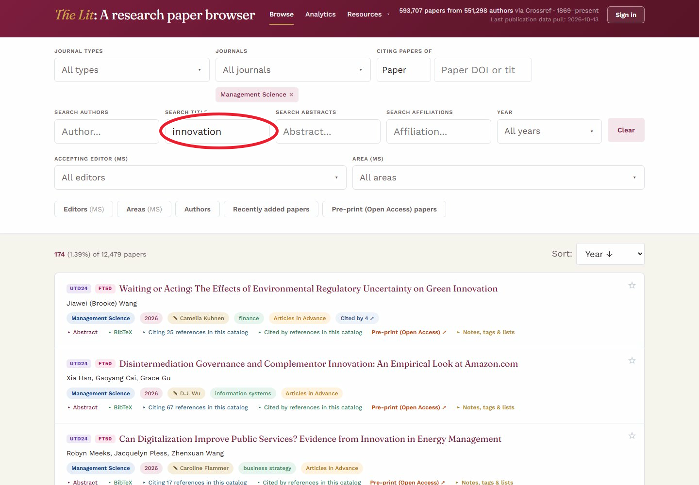

Literature reviews
Start with a question
Looking for work on innovation? Search titles or abstracts, then narrow by journal and year. Open the promising papers, follow their references and copy the search link when you want to return to the same starting point.
Try this search →
